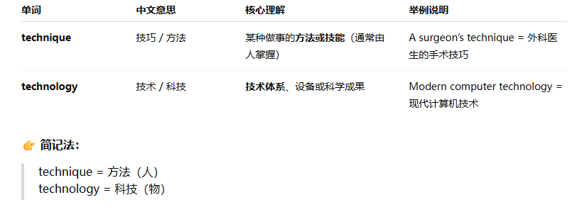

replenish /rɪˈplen.ɪʃ/ v.补充;重新装满
After an exhausting(/ɪɡˈzɔː.stɪŋ/使人精疲力竭的；使人疲惫不堪的) climb up the mountain they had a very good sleep to replenish their energy.在全力爬上山后，他们睡了个好觉，以便恢复充沛的精力。
replenish food and water supplies 补充食物和水
共 50 个词条 · 1 张附图（含音标截图）
replenish /rɪˈplen.ɪʃ/ v.补充;重新装满
After an exhausting(/ɪɡˈzɔː.stɪŋ/使人精疲力竭的；使人疲惫不堪的) climb up the mountain they had a very good sleep to replenish their energy.在全力爬上山后，他们睡了个好觉，以便恢复充沛的精力。
replenish food and water supplies 补充食物和水
weave /wiːv/ v.编织;纺织;编造 n.织物;织法
Workers in the factory weave silk thread into beautiful cloth.这家工厂的工人把丝线织成漂亮的布。
weave a narrative(/ˈnær.ə.tɪv/故事;叙述, （对事件的特定的）陈述) 编故事
embarrass /ɪmˈbær.əs/ v.使窘迫，使尴尬;妨碍
He often embarrasses her by making jokes about her in front of friends and colleagues他经常在朋友和同事面前拿她开玩笑，令她难堪。
embarrass the prime minister 使首相难堪
propound /prəˈpaʊnd/ v.提出;提议;考虑
Her new book expands upon the theory propounded in her first book.她的新书详述了她在第一本书中提出的理论。
propound a general theory of the vocal(/ˈvəʊ.kəl/嗓音的;发声的，喜欢畅所欲言的;直言不讳的，（流行音乐中的）演唱部分) sounds that animals make提出一个有关动物发声的通用理论
perspective /pəˈspek.tɪv/ n.观点，视角;远景;透视图
Travelling to different countries gives you unique perspectives on life that can be very valuable.去不同国家旅行会带给你独特的生活视角，这是非常有价值的。
see the issue from a different perspective 以不同角度看待这件事
viewpoint n.观点
Let's consider the benefits of maps from a geographer's perspective.让我们从地理学家的视角来考虑地图带来的好处。
distribute /dɪˈstrɪb.juːt/ /ˈdɪs.trɪ.bjuːt/ v.分配;分类;分发 dis=apart
The teacher distributed the examination papers to the whole class.老师把试卷分发给了全班同学
distribute food to the earthquake victims 向地震灾民分发食品
distribution n.分配;分发
notable /ˈnəʊ.tə.bəl/ adj.值得注意的，显著的;著名的
The gardens are notable for their incredible collection of flowers这些花园以其令人难以置信的花卉收藏而闻名。
a notable achievement 一项显著的成就
the most notable feature 最明显的特征
notably adv. 显著地，尤其
redundant /rɪˈdʌn.dənt/ adj.多余的;冗长的;被解雇的，失业的
He had worked in the company since he was twenty-one years old, so when he was made redundant last year, he felt very sad他从21岁起就在这家公司工作，所以当他去年被解雇时，他感到很难过。
redundant employees 被裁掉的员工 employer这个er表示动作的发出者，所以employer表示雇佣者，雇主，ee是动作的接收者，所以employee就是雇员。
exceed /ɪkˈsiːd/ v.超过;胜过
You should never exceed the dose (/dəʊs/一剂, 一些（糟糕或不愉快的事）)of medicine prescribed by your doctor.你的用药不能超过医生开的剂量。
exceed expectations 超出预期
excess n.超过;过量
excessive (/ekˈses.ɪv/)adj.过度的;过多的
echo n.回声，回音v发出回声;附和，重复
The cave was huge and when they shouted there was an echo which filled the air.山洞很大，当他们呼喊时，回声在那里回荡。
the echo of footsteps running down the corridor沿走廊跑的脚步回声
Blind people, without even being aware of the fact, are actually using echoes of their own footsteps and of other sounds, to sense the presence of obstacles即使没有意识到这一事实，盲人实际上通过使用他们自己的脚步声或其他声音的回声来感知障碍的存在。
slice n.薄片，片;小块;部分v切，割，划 不光是名词，也能表示动词
She cut a thin slice of birthday cake for each guest at the party.她为聚会上的每位客人切了一小块生日蛋糕。
four slices of bread 四片面包
potato slices 土豆片
chorus /ˈkɔː.rəs/ n.副歌;合唱团;合唱曲
The chorus sang in perfect harmony(/ˈhɑː.mə.ni/（音乐中的）和声，协调，和谐，一致), adding depth and richness to the musical performance.合唱团唱得非常和谐，为音乐演出增添了深度和多样性。
the Halleluiah(/ˌhæl.ɪˈluː.jə/ also hallelujah，哈利路亚（对上帝的赞美）) Chorus 哈利路亚合唱曲
the chorus of her song 她歌曲的副歌
fuse /fjuːz/ n.保险丝;导火线v.熔合;熔化
The electrician (/ˌɪl.ekˈtrɪʃ.ən/电工;电气技师)replaced the blown fuse to restore power to the house.电工更换了烧坏的保险丝，使房子恢复供电。
change a fuse 换保险丝
abate v.减轻，减少;废除;消除
After the storm, the wind began to abate, and the rain subsided(/səbˈsaɪd/（状况）趋于平缓，平息，（建筑物、地面或水面）下沉，下陷，沉降)暴风雨过后，风开始减弱，雨也停了。
show no signs of abating 没有减弱的迹象
discern /dɪˈsɜːn/ v.识别;辨别
I am trying to discern the best approach to solving a problem at work.我试图找出在工作中解决问题的最佳方法。
discern a number of different techniques (/tekˈniːk/技术，技能，)in her work在她的作品中看出许多不同的创作手法
detect v.探察;觉察;发现
distinguish v.辨别

unpredictable /ˌʌn.prɪˈdɪk.tə.bəl/ adj.不可预知的;出乎意料的
His moods were constantly changing and very unpredictable他的情绪总是在变化，难以预测。
unpredictable weather 变幻莫测的天气
unexpected adj.出乎意料的
predictable adj.可预测的
predict v. 预测
unpredictable noise 不可预测的噪音
feeble /ˈfiː.bəl/ adj.衰弱的，虚弱的;微弱的
The elderly man's feeble voice struggled（/ˈstrʌɡ.əl/奋斗，努力，拼搏，打斗，争斗;（尤指）扭打） to （努力）be heard in the noisy room.老人微弱的声音挣扎着在嘈杂的房间里被听到。
a feeble old man 一位衰弱的老人
a feeble attempt to explain 无力的试图解释
deliberately /dɪˈlɪb.ər.ət.li/ adv.故意地;谨慎地
She didn't like one of her cousins so she deliberately left him off the guest list for the party.她不喜欢自己的一个堂兄弟，因此她故意将其排除在聚会的宾客名单之外。
deliberately ambiguous 故意模棱两可
intentionally adv. 故意地 intention 意图，打算
on purpose 故意地
deliberate adj.故意的
isolate /ˈaɪ.sə.leɪt/ v.隔离;孤立
It's important to isolate yourself if you feel you have symptoms of a potentially contagious（/kənˈteɪ.dʒəs/（疾病）接触性传染的，（情感）具有感染力的，蔓延的） illness如果你觉得自己有潜在传染性疾病的症状，那么将自己隔离开来是很重要的。
isolate the country from the rest of Europe使国家与其他欧洲国家隔离开来
isolation n.隔离；孤立
conversation n.对话;交谈，会话
She was a great lover of conversation and enjoyed the reunion(团聚，聚会，重聚，重逢) dinners with her old classmates她很喜欢交流，喜欢和老同学们一起聚会吃饭。
a telephone conversation 电话交谈
bloom /bluːm/ n.花，花朵;红润v开花;繁荣，兴旺
The flowers bloomed in vibrant colours, filling the garden with a delightful （令人高兴的，使人愉快的，给人快乐的）fragrance（/ˈfreɪ.ɡrəns/芳香，香气，香水）鲜花绽放出鲜艳的色彩，使花园充满了令人愉悦的香味。
the bloom in her cheeks（/tʃiːk/脸颊，面颊，脸蛋） 她面颊上的红润光泽
steam n.蒸汽，水蒸气;雾气 adj.蒸汽的
The hot steam rose from the teapot, filling the room with a pleasant aroma(/əˈrəʊ.mə/（通常指食物、饮料的）香味，香气，芳香).滚烫的蒸汽从茶壶里冒出来，房间里充满了宜人的香气。
the introduction of steam in the 18th century 18世纪蒸汽动力的采用
When primitive automobiles first began to appear in the 1800s , their engines were based on steam power.当原始的汽车初次出现在19世纪时，它们的引擎是基于蒸汽动力的。
辨析 steam 与 vapour：见第24章 vapour（水蒸气 / 蒸汽动力 vs 广义气态蒸汽）。
enclose /ɪnˈkləʊz/ v.包围，围住;(随信)附上
The beautiful temple garden was enclosed by a high wall这座美丽的寺庙花园被一道高墙环绕着。
a dark enclosed space 一个黑暗的封闭空间
enclosure /ɪnˈkləʊ.ʒər/ n.占领;围绕 围起来的区域;围场;围地，圈地，（信或包裹中的）附件
sip n. 一小口v.小口喝
She took a leisurely sip of her hot tea, savouring（/ˈseɪ.vər/细品，享用（食物）） the warmth and delicate flavours她悠闲地喝了一口热茶，品尝着茶的温暖和清香。
take a sip of drink 喝一小口饮料
twig /twɪɡ/ n. 嫩枝;血管小支，神经小支v 顿悟，（突然）懂得，明白，领悟
The bird carefully collected twigs and sticks and weaved them together to build a nest.这只鸟小心翼翼地收集树枝和木条，把它们编织在一起搭了一个窝。
pull out a twig 抽出一根小枝
plateau /ˈplæt.əʊ/ n.高原;稳定期，停滞期
The mountain road levelled off and they saw that they were on the plateau.山路变平了，他们发现自己到了高原上。
reach a plateau 到达停滞期
implement v.实施，执行;实现
They promised to implement a new system to control financial operations in the company.他们承诺实施新的制度来管理公司的财务运作。
implement reforms 实施改革
carry out 执行
It's true there are new regulations for mercury (/ˈmɜː.kjə.ri/)emissions from power plants, but these will need billions of dollars to implement, and increase costs for everyone.确实存在有关发电厂汞排放的新规定，但这需要数十亿美元来实施，并且增加每个人的成本。
辨析 implement 与 enforce：见第24章 enforce（落地落实 vs 强制执法）。
culminate /ˈkʌl.mɪ.neɪt/ v.结束;到达顶点;到子午线
After months of hard work, the project will culminate in a grand exhibition.经过几个月的努力工作，这个项目将在一个盛大展览中达到高潮。
culminate in success 取得成功
legislation /ˌledʒ.ɪˈsleɪ.ʃən/ n.立法;法律 来自于legal
The new legislation will provide better security for personal information and data.新的立法会更好地保障个人信息和数据的安全。
an important piece of legislation 一条重要的法规
Linguistic issues, it is argued, cannot be solved by logic and legislation.有人认为，语言问题不能通过逻辑和立法来解决.。
schedule 英/ˈʃedʒ.uːl/ 美/ˈskedʒ.uːl/ n.计划表;时间表v安排;预定;计划 相当于timetable
We are currently working on a very tight schedule in order to finish the project on time.为了按时完成项目，我们目前正按照非常紧张的时间表工作。
a tight schedule 紧凑的日程
a train schedule 列车时刻表
fatigue /fəˈtiːɡ/ n.疲乏，厌倦;疲劳 adj. 疲劳的
After a long day at work, she felt a deep sense of fatigue and eagerly sought rest.经过一整天的工作，她感到非常疲劳，急切地想休息一下
physical and mental fatigue 身体和精神的疲劳
Apparently, unpredictable noise produces more fatigue than predictable noise, but it takes a while for this fatigue to take its toll（产生效果，产生影响） on performance.显然，非可预测性噪音比可预测性噪音会让人更疲劳，不过疲劳导致工作上的错误还需要一段时间。
instruction说明
His method of instruction was old-fashioned and slightly(/ˈslaɪt.li/稍微，略微，苗条地；纤细地) boring.他的教学方法过于老旧了，并且有些乏味。
follow the instructions 按照说明操作
carry out one's instruction 执行某人的命令
instruct v.教学;指导;下指令
The purpose of instruction is to make us even more different from one another, and in the process of being educated we can learn from the achievements of those more gifted than ourselves.教育的目的在于使我们更加与众不同，而在受教育的过程中我们可以从比我们更有天赋的人的成就中学有所得。
replay n. /ˈriː.pleɪ/重放;重演v /ˌriːˈpleɪ/重放;重现重演
The teacher replayed the section of the video that the students had missed老师重新播放了学生们错过的那一段视频。
a replay of the wedding on video 重放婚礼录像
simulate /ˈsɪm.jə.leɪt/ v.模仿;假装
Computer programmes can accurately simulate the chess playing strategies of professionals.计算机程序可以准确模拟专业棋手的下棋策略
simulate a full year of the globe's climate 模拟全年地球的气候
simulation n.模仿:模拟
similar 相似的
squeeze /skwiːz/ v.挤压;压榨；（困难地）挤进，挤过；给…带来财务困难，使陷入财务困境
Cut the lemon in half and squeeze the juice over the fish before baking.将柠檬切成两半，在烤鱼之前把柠檬汁挤在鱼上。
squeeze the trigger of a gun 扣动枪的扳机
confirm /kənˈfɜːm/ v.确认;证实;批准
You must confirm your attendance to the conference by the first Monday of next month.你必须在下个月的第一个周一前确认自己是否参加会议
confirm my suspicion(/səˈspɪʃ.ən/) 证实我的猜疑
hesitate v.犹豫;不愿意
Don't hesitate to ask me if you have any further questions on the matter.如果关于这件事你还有进一步的疑问，请不要犹豫，问我就可以。
do not hesitate to contact me 请尽管和我联系
hesitation n.犹豫
digest v. /daɪˈdʒest/消化;理解，领悟n. /ˈdaɪ.dʒest/文摘;摘要
I find that I don't digest meat very easily, so I eat a largely vegetarian diet.我发觉自己无法很好地消化肉类，因此我以素食为主。
digest plants 消化植物
digest the information 理解这一信息
digestion n.消化;领悟
bite v.咬，咬住 ，（鱼）上钩，吞饵，咬（伤）;叮咬;蛰伤，产生不良影响，起不良作用
swallow /ˈswɒl.əʊ/ v.吞，吞咽 ，（因为紧张、害怕或要开始说话而）做吞咽动作，咽口水，大量使用，大量夺走（贵重之物），轻信；全盘接受
Soil is also an ally（/ˈæl.aɪ/（尤指战时的）同盟国，盟友，盟友；支持者） against climate change: as microorganisms within soil digest dead animals and plants, they lock in their carbon content, holding three times the amount of carbon as does the entire atmosphere.土壤同样可以帮助我们对抗气候变化:由于土壤中的微生物消化死去的动物和植物，它们可以留住动植物的碳成分，保存相当于整个大气层三倍的碳含量。
brilliant /ˈbrɪl.jənt/ adj.明亮的;巧妙的;杰出的，颇有才气的，聪颖的;技艺高超的
The light from the lamp was a brilliant white and he thought it was too bright for night-time reading before bed.灯光是明亮的白色，他认为这对于晚上入睡前的阅读来说太亮了。
a brilliant performance 一场出色的表演
brilliant sunshine 明媚的阳光
As the fruit matures（/məˈtʃʊər/成熟的，慎重的，经深思熟虑的，（身体上）发育成熟的，味道醇厚的，酿熟的）, the coconut water gradually solidifies to form the brilliant white, fat-rich, edible flesh（（人或动物的）肉;果肉;蔬菜的可食部分，肉体） or meat.随着果实成熟，椰子汁逐渐凝固，形成亮白色的、富含脂肪的可食用的果肉。
confront v.面对;面临;处理，解决
She decided to confront her boss directly about the problem她决定直面自己的老板来解决问题。
be confronted with 遇到
burgeon /ˈbɜː.dʒən/ v. 萌芽,发芽;迅速发展n.芽;嫩枝
As car prices go down, car dealers are expecting sales to burgeon.随着汽车价格下降，汽车经销商们期望销量迅速增长
burgeoning demand 迅速增加的需求
arrest /əˈrest/ v.逮捕，拘留;阻止，中止
Policeman have the power to arrest people who break the law.警察有权力逮捕违反法律的人。
arrest the company's decline 阻止公司的衰落
overuse n. /ˌəʊ.vəˈjuːs/ v. /ˌəʊ.vəˈjuːz/ 过度使用
The mechanism had become ineffective from overuse and needed replacing由于过度使用，机械装置已经失效，需要更换。
the overuse of chemicals in agriculture农业中对化学物质的过度使用
underuse v.未充分利用
cosmic /ˈkɒz.mɪk/ adj. 宇宙的，巨大无比的
The study of cosmic laws underlines （/ˌʌn.dəˈlaɪn/，also underscore，强调，突出）most astrophysics（/ˌæs.trəʊˈfɪz.ɪks/天体物理学） research 对宇宙规律的研究是大多数天体物理学研究的基础。
cosmic radiation 宇宙辐射
compel v.强迫，迫使
She felt compelled to help the stranger, from a sense of moral （道德的）virtue(/ˈvɜː.tʃuː/美德;高尚品德) and empathy（/ˈem.pə.θi/同情;同感，共鸣）出于道德和同理心，她觉得必须帮助那个陌生人。
compel cyclists to wear a helmet 强制骑车人头盔
Some researchers say the results constitute(/ˈkɒn.stɪ.tʃuːt/是；被看作，被视为，形成;构成;组成) compelling evidence that telepathy is genuine. 一些研究人员说，研究结果有力地证明了心灵感应是真实的。
latitude n.纬度;界限;活动范围
He noted the latitude and longitude, and then made a mark on the map.他记下纬度和经度，并在地图上进行了标记。
lines of latitude 纬线
Hence, the calendars that were developed at the lower latitudes were influenced more by the lunar cycle than by the solar year. 因此，在低纬度地区编制的历法更多受到月球周期的影响，而非太阳年的影响。
altitude 海拔，海拔高度
immense /ɪˈmens/ adj.巨大的，广大的, 非常好，极其好
She was under immense pressure to resign（/rɪˈzaɪn/辞职;辞去（职务）;放弃（工作），（在国际象棋中，当看到没有任何方法避免失败时）放弃，投子认输） after the company lost so much money.在公司亏损很多钱之后，她承受着巨大的辞职压力。
a project of immense importance 一项极其重要的工程
immense technological progress in the domain of chemistry化学领域的巨大科技进步。在这里domain=field
revenue /ˈrev.ən.juː/ n.收入;收益
The company had a significant yearly revenue from car sales but very little profit due to high staff costs这家公司每年的汽车销售收入很可观，但由于员工成本高，利润非常少。
a slump (/slʌmp/（价格、价值或销售额）猛跌，突然下降，沉重地坐下（或倒下），（价格、价值、销售额等的）猛跌，暴跌，萧条（期），衰落)in oil revenues 石油收入的下跌
jet n.喷气式飞机
The powerful jet engines propelled(/prəˈpel/推进，推动) the plane swiftly through the sky.强大的喷气发动机推动飞机在天空中快速飞行。
her private jet 她的私人喷气式飞机
the subsequent development of the jet aircraft in the 1950s喷气式飞机在20世纪50年代的后续发展
bibliography /ˌbɪb.liˈɒɡ.rə.fi/ n.参考书目;文献目录
The bibliography should be written at the very end of your research paper.参考书目应该写在你研究论文的最后。
the full bibliography printed at the end of the third volume印在第三卷最后的完整参考书目